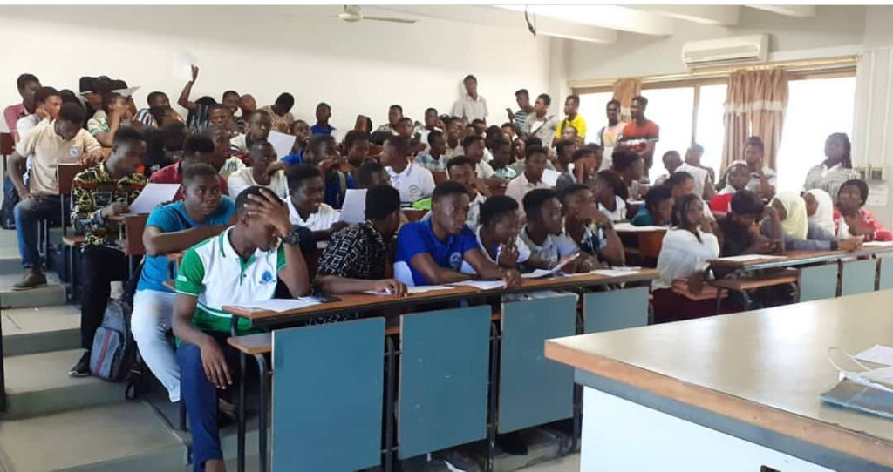
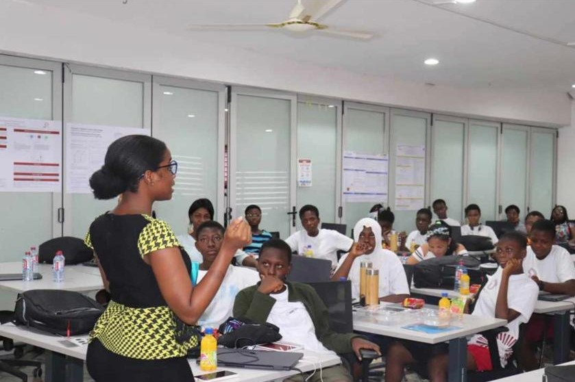
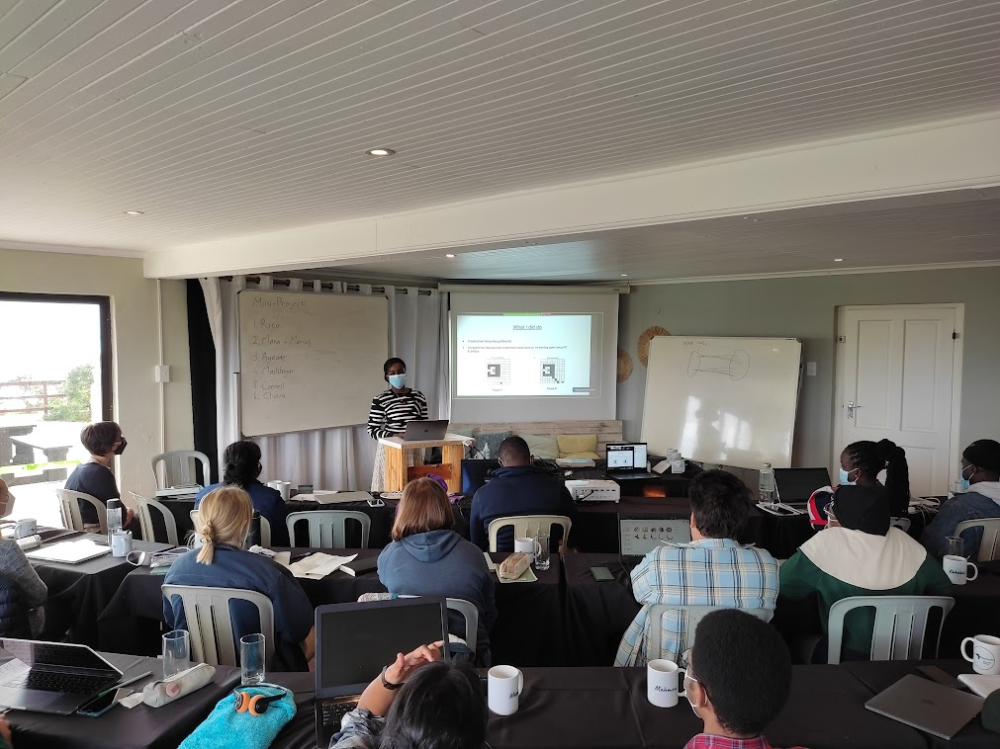
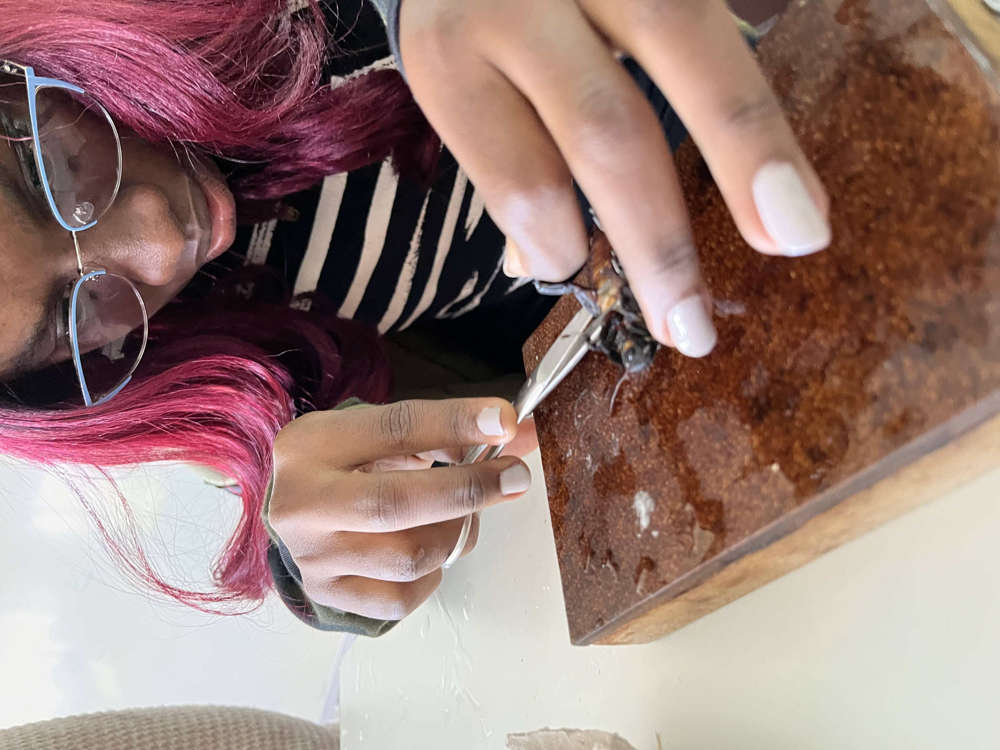
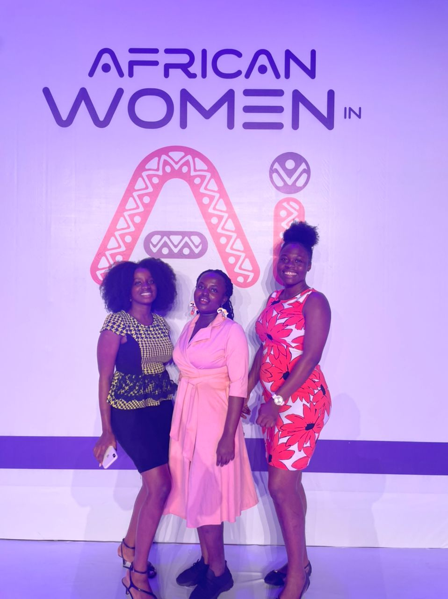
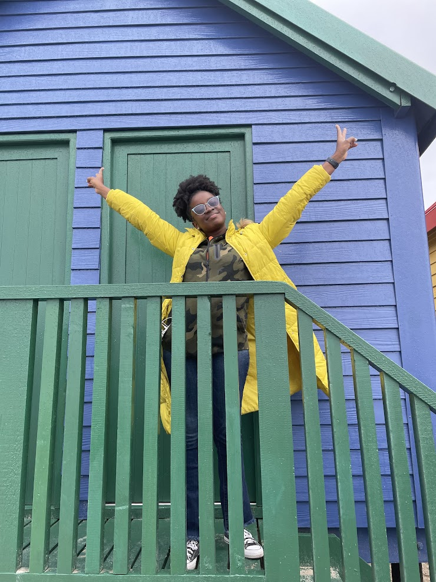

African penguin shot at penguin santuary in Cape Town.
Everything you see around represents the beauty of mathematics. The reason the sky is blue and sunsets, heart warming. The reason why your favorite flower has specific number of petals. The reason why you have two eyes and the reason why your universe is in perfect balance- not falling apart.-(Elizabeth cornell Afrakomah Awuku)
As an undergrad student at the University of Cape Coast, I had the privilege of vying for the position of public relation officer for the Mathematics Students Association of Ghana-UCC. Operating as the head of media for my association, I got to understand people a bit more. I was able to improve on my already built people management skills. Aside from sticking my nose in my books, it was an amazing experience connecting with level 100 -400 students reading any mathematical-related course. Fast forward after my undergrad studies I became a teaching assistant at the Department of Statistics -UCC. It was a brand new experience for me. I must say, I finally appreciate every effort my past teachers had to put into helping me reach this feat. I helped mark assignments and teach courses like Introduction to Statistics, Data Analysis, Research Methods, and Stochastic Process.
 I find joy in sharing my journey and experience to younger girls who have similar aspirations as mine. With the help of the girls in my country- Ghana are gradually Africa Institute for Mathematical Sciences – Ghana, Girls in Mathematical Sciences Program (GMSP) is a fully-funded, exciting and challenging 9-month program, created for bright, curious and creative female Senior High School students to unlock their potential in the Mathematical Sciences. It has been carefully structured to prevent interference in mainstream academics. The program operates on a hybrid model with an online and onsite session. The goal is to mentor participants to pursue STEM careers at the highest level in research, training and industry. The training is also designed to create a special class of students who will lead cutting edge research and innovation in the next few years. It is currently being implemented with support from the Government of Ghana through the Ministry of Education under the UNESCO Category II arrangement.
 Imbizo is a Xhosa word meaning “a gathering to share knowledge”. The IBRO-Simons Computational Neuroscience Imbizo, or isiCNI is exactly that: an opportunity for African and international students to learn about cutting edge research techniques in computational neuroscience.
Imbizo is a Xhosa word meaning “a gathering to share knowledge”. The IBRO-Simons Computational Neuroscience Imbizo, or isiCNI is exactly that: an opportunity for African and international students to learn about cutting edge research techniques in computational neuroscience.
Over the years, I have faced instances where I had to produce results for things I had no or little knowledge about. In such moments, I always have the choice to say no or give and cry myself to bed. Thankfully, I have a large bank for the "I can do" energy. Moreso, thanks to leaders and supervisors who encourage me, I have learnt that human beings able to attain anything they put their minds to.
To better understand the human body and its characteristics, scientists have experimented on animals with smaller systems. A typical example is the C elegans nematode. The investigation of the biology of C. elegans has contributed to the information we have on human diseases such as cancer, neurodegeneration (e.g. Alzheimer’s disease), neurodevelopmental disabilities and syndromes, muscular dystrophies, and aging, which is not itself a disease but influences the other diseases mentioned.
Women across the world have their unique talents and abilities. Gradually women are being recgonised for their hardwork and impact on communities and the world as a whole. We neeed more women venturing into the STEM fields and staying.
 Have you ever had the notion that mathematicians are just boring people with messy hair and talk a lot of crazy equations? No. I am not going to tell you that you are wrong. Yeah, we do sometimes have that Albert Einstein look and say things our family members do not understand. Scientists can be super fun. Knowing a bunch of theories and equations still does not exempt me from having human problems. I still get hungry at the late hours. I own three stubborn cats who have no respect for me and yet I feed them every day and oh! I forgot I sing off key under the shower too. I try my best to maintain a good amount of social fun. Besides no man should be an island. As scientists, we should be ready to learn how to interact with people. That is how collaborations are made. Away from academia, you would find me editing videos, shooting videos, creating some good content, or watching a great anime.
I am open to sharing ideas and working on non profitable projects in education .